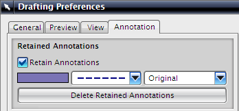
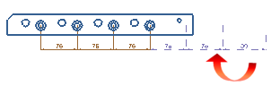

预计完成这堂课需要：4–7 分钟
当编辑一个模型时，保留注释选项将决定诸如尺寸、符号、标签、剖切线、剖面线等注释要转化为非关联状态还是从图纸中删除。‘保留’与任何一个或多个引用到其它对象上的关联已被破坏的注释相关。
保留注释选项位于制图首选项对话框的注释选项卡中，当取消选中保留注释复选框，任何对模型的更改，包括移除、抑制或替换已与制图注释关联的特征，将会使那个注释被删除当选中该复选框，非关联注释将被置于保留状态。

注释选项卡上的颜色、线型以及线宽选项允许您指定保留的注释在图纸上如何显示，以便更容易识别。

除了剖切线符号，删除保留的注释选项将从图纸中删除所有此前保留的注释。
|
注释 |
您也可以右击一个保留的注释然后选择删除。 |